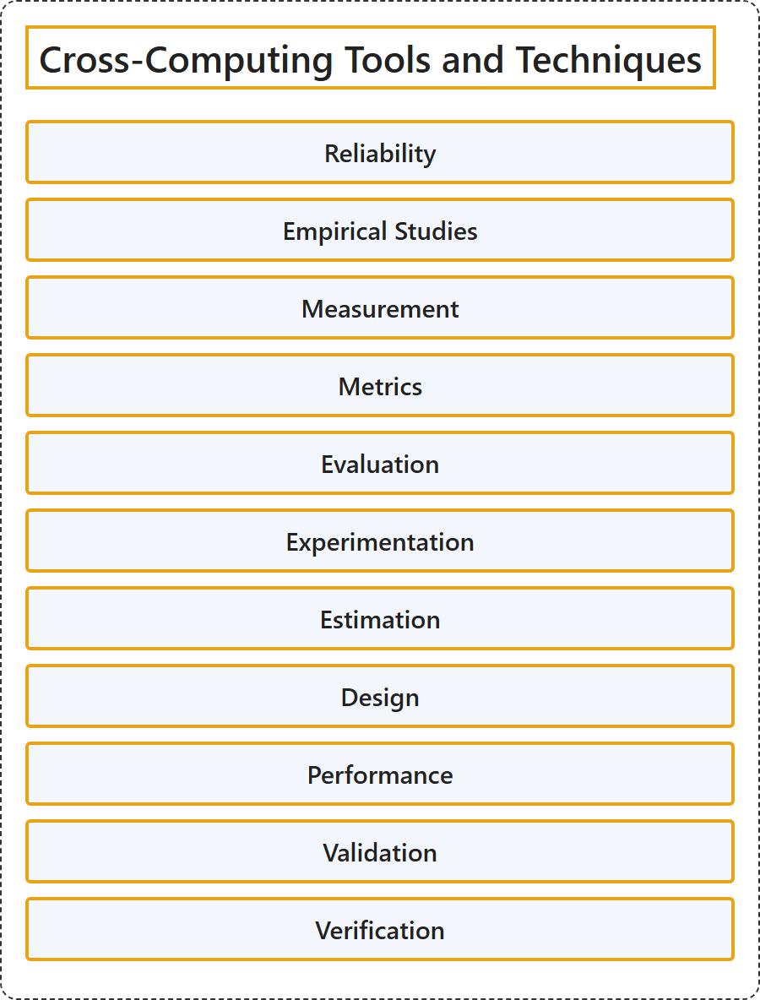

1.1 Cross-Computing Tools and Techniques
Classification

Glossary
| Term | Definition | 中文翻译 | Source |
|---|---|---|---|
| Cross-Computing Tools and Techniques 跨计算的工具与技术 |
(No definition) | （无定义） | Association for Computing Machinery, 2012 |
| Reliability 可靠性 |
"The ability of a system or component to function under stated conditions for a specified period of time." | 系统或组件在规定条件下、在规定时间内正常发挥功能的能力。 | National Institute of Standards and Technology, n.d.-e, "reliability" entry, definition 1 |
| Empirical Studies 实证研究 |
(context) "based on what is experienced or seen rather than on theory" | （语境）基于经历或观察到的事实，而不是基于理论 | Cambridge University Press & Assessment, n.d.-a, "empirical" adjective |
| Measurement 测量 |
"The process of obtaining quantitative values using quantitative methods." | 用定量方法获得定量数值的过程。 | National Institute of Standards and Technology, n.d.-c, "measurement" entry |
| Metrics 度量指标 |
"Measures and assessment results designed to track progress, facilitate decision-making, and improve performance with respect to a set target." | 为对照既定目标来跟踪进展、辅助决策和提升绩效而设计的度量和评估结果。 | National Institute of Standards and Technology, n.d.-d, "metrics" entry, definition 2 |
| Evaluation 评估 |
"the process of judging or calculating the quality, importance, amount, or value of something" | 判断或计算某事物的质量、重要性、数量或价值的过程 | Cambridge University Press & Assessment, n.d.-c, "evaluation" noun |
| Experimentation 实验 |
"A systematic approach to the process of testing new ideas, methods, or activities that applies principles and techniques at the data collection stage to ensure the generation of valid, defensible, and supportable conclusions." | 一种系统化的方法，用于测试新的想法、方法或活动；它在数据收集阶段运用原则和技术，以确保得出有效、站得住脚且有依据的结论。 | National Institute of Standards and Technology, n.d.-b, "experimentation" entry |
| Estimation 估算 |
"a guess or calculation about the cost, size, value, etc. of something" | 对某事物的成本、规模、价值等所做的猜测或计算 | Cambridge University Press & Assessment, n.d.-b, "estimation" noun, sense 2 |
| Design 设计 |
"Process to define the architecture, system elements, interfaces, and other characteristics of a system or system element." | 定义系统或系统元素的架构、系统元素、接口和其他特性的过程。 | National Institute of Standards and Technology, n.d.-a, "design" entry, definition 1 |
| Performance 性能 |
"how well a person, machine, etc. does a piece of work or an activity" | 一个人、一台机器等完成一项工作或一项活动的好坏程度 | Cambridge University Press & Assessment, n.d.-d, "performance" noun |
| Validation 确认 |
"Confirmation, through the provision of objective evidence, that the requirements for a specific intended use or application have been fulfilled." | 通过提供客观证据来证实：针对某一特定预期用途或应用的要求已经得到满足。 | National Institute of Standards and Technology, n.d.-f, "validation" entry, definition 2 |
| Verification 验证 |
"Confirmation, through the provision of objective evidence, that specified requirements have been fulfilled." | 通过提供客观证据来证实：规定的要求已经得到满足。 | National Institute of Standards and Technology, n.d.-g, "verification" entry, definition 4 |
References
Association for Computing Machinery. (2012). The 2012 ACM Computing Classification System. Retrieved October 28, 2026, from https://www.acm.org/publications/class-2012
Cambridge University Press & Assessment. (n.d.-a). Empirical. In Cambridge Dictionary. Retrieved October 28, 2026, from https://dictionary.cambridge.org/dictionary/english/empirical
Cambridge University Press & Assessment. (n.d.-b). Estimation. In Cambridge Dictionary. Retrieved October 28, 2026, from https://dictionary.cambridge.org/dictionary/english/estimation
Cambridge University Press & Assessment. (n.d.-c). Evaluation. In Cambridge Dictionary. Retrieved October 28, 2026, from https://dictionary.cambridge.org/dictionary/english/evaluation
Cambridge University Press & Assessment. (n.d.-d). Performance. In Cambridge Dictionary. Retrieved October 28, 2026, from https://dictionary.cambridge.org/dictionary/english/performance
National Institute of Standards and Technology. (n.d.-a). Design. In CSRC glossary. Retrieved October 28, 2026, from https://csrc.nist.gov/glossary/term/design
National Institute of Standards and Technology. (n.d.-b). Experimentation. In CSRC glossary. Retrieved October 28, 2026, from https://csrc.nist.gov/glossary/term/experimentation
National Institute of Standards and Technology. (n.d.-c). Measurement. In CSRC glossary. Retrieved October 28, 2026, from https://csrc.nist.gov/glossary/term/measurement
National Institute of Standards and Technology. (n.d.-d). Metrics. In CSRC glossary. Retrieved October 28, 2026, from https://csrc.nist.gov/glossary/term/metrics
National Institute of Standards and Technology. (n.d.-e). Reliability. In CSRC glossary. Retrieved October 28, 2026, from https://csrc.nist.gov/glossary/term/reliability
National Institute of Standards and Technology. (n.d.-f). Validation. In CSRC glossary. Retrieved October 28, 2026, from https://csrc.nist.gov/glossary/term/validation
National Institute of Standards and Technology. (n.d.-g). Verification. In CSRC glossary. Retrieved October 28, 2026, from https://csrc.nist.gov/glossary/term/verification